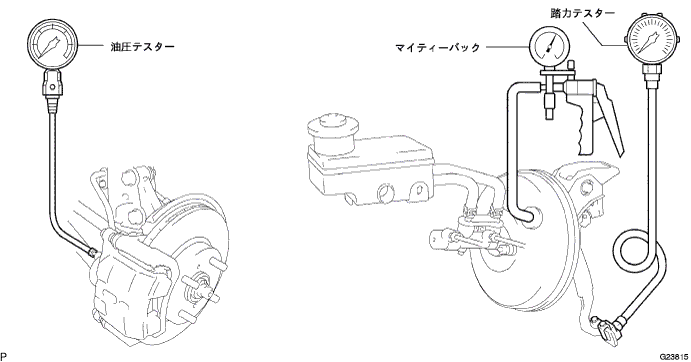

Slip the clip and separate the vacuum hose from the vacuum check valve.
Connect the portable brake booster tester and Mighty back as shown in the figure, and remove the tester.

Anti -tightening inspection
Using a Mighty bag, the negative pressure in the brake boot star ASSY is set to 66.7 kpa {500 mmhg} to check the change in negative pressure.
- standard
- No negative pressure decreases for 15 seconds
Power airtightness inspection inspection
While stepping on the brake pedal with 196N {20kgf}, use a Mighty bag to check the change in negative pressure by setting the negative pressure in the brake boot star ASSY to 66.7 kpa {500 mmhg}.
- standard
- The negative pressure decreased in 15 seconds is 3.3 kpa {25 mmhg}
Unfoltaneous operation inspection
Inspection of the liquid pressure with each step force without the negative pressure in the brake boo star ASSY.
- Reference value
Polical force [N {KGF}] MPA {kgf/cm2}] 196 {20} 0.8 {7.8} 294 {30} 1.5 {14.8}
Double force operation inspection
While the brake pedal is stepped on with each step, use the Mighty Back to check the negative pressure in the brake boot star ASSY to 66.7 kpa {500 mmhg}, and check each liquid pressure.
- Reference value
Polical force [N {KGF}] MPA {kgf/cm2}] 49 {5} 2.4 {24.9} 98 {10} 5.4 {54.7} 147 {15} 7.2 {73.8} 196 {20} 7.6 {77.3}
Remove the portable brake booster tester and Mighty back.
Connect the vacuum hose to the vacuum check valve.
Brake system air removal (guidelines reference)
reference)